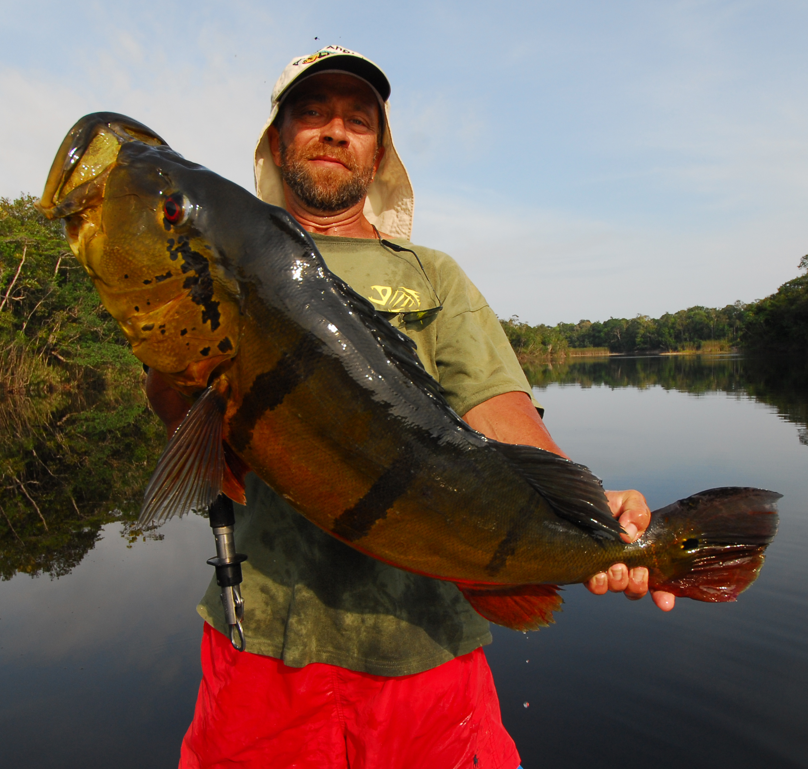
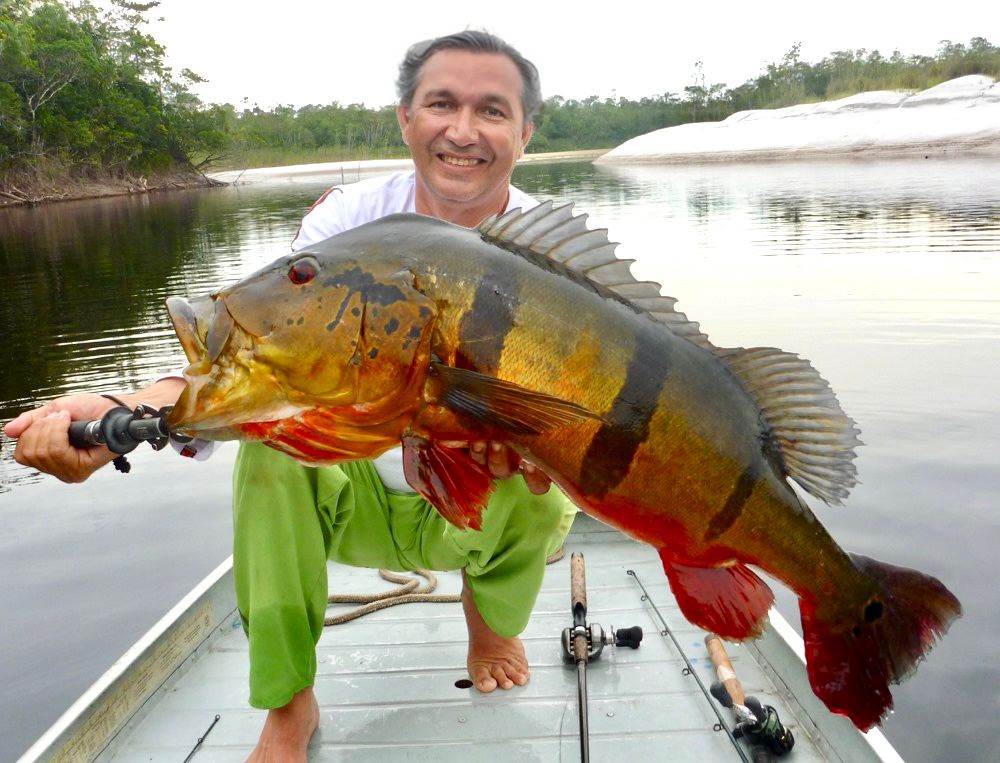
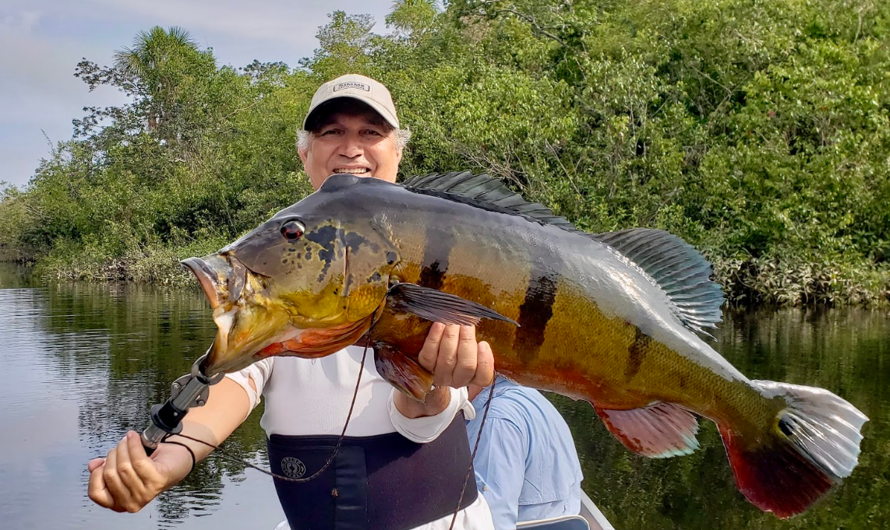
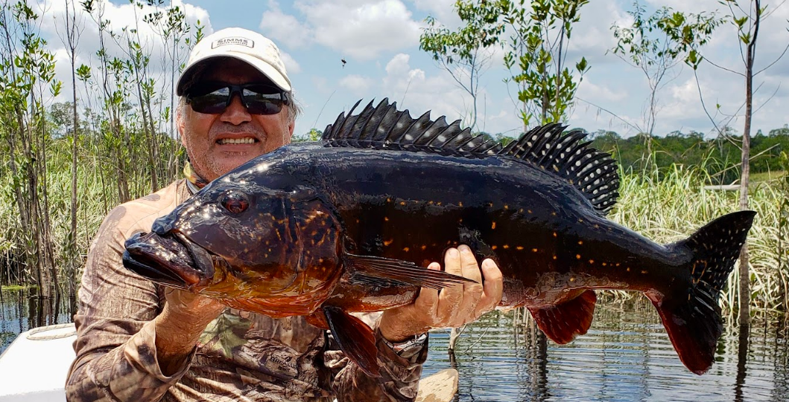
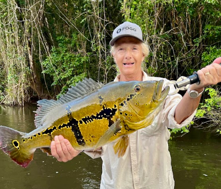
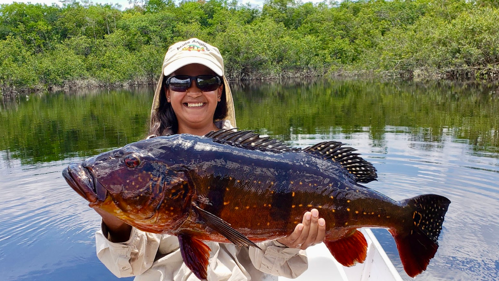
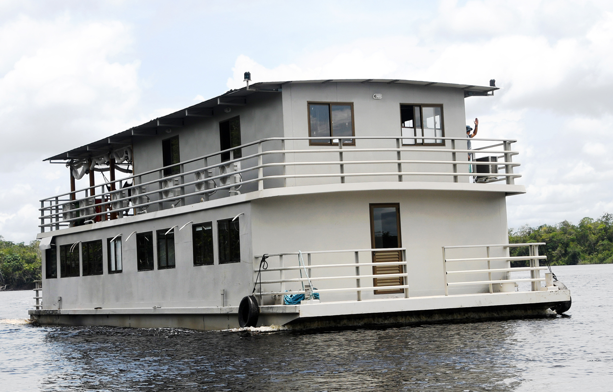

Strategy & Mobility
Explosive topwater strikes, strategic mobility, and the pursuit of Peacock Bass Temensis in some of the most recognized waters of the Rio Negro.

The Giant Peacock Bass is an operation fully specialized in Peacock Bass fishing in the Rio Negro region.
More than a general Amazon fishing experience, this operation was specifically designed for anglers seeking action, power, and the opportunity to pursue some of the largest Peacock Bass Temensis in the Amazon.
The entire structure of the operation — from the yacht mobility to the fishing strategies and guide experience — is focused on maximizing the quality of the fishing experience and the pursuit of large fish.
The result is a more dynamic, active, and strategic operation designed for anglers who want to fully experience the intensity of Amazon Peacock Bass fishing.

The Giant Peacock Bass was specifically designed for the strategic pursuit of Peacock Bass Temensis in the Rio Negro region.
Unlike more static operations, this experience combines mobility, technical knowledge, and fishing strategies developed specifically to reach more productive areas according to river conditions.
The operation utilizes a shallow-draft yacht, allowing access to privileged structures and regions that many conventional boats cannot reach.
The entire fishing dynamic is focused on adapting daily to factors such as river levels, weather conditions, and natural fish behavior, using different techniques and strategies to maximize the quality of the fishing experience.
Peacock Bass Temensis fishing stands out for its aggressiveness, strength, and visual topwater strikes, being considered one of the most exciting experiences in Amazon freshwater sport fishing.
The result is an operation designed for anglers who value strategy, technical fishing, and the unique experience of pursuing giant Peacock Bass in some of the Amazon’s most famous waters.

Currently, the Giant Peacock Bass operation takes place in the Rio Negro region, one of the most internationally recognized destinations for Peacock Bass Temensis fishing.
The operation explores different river systems and structures according to the natural conditions of each season, including lakes, igarapé entrances, beaches, submerged timber, riverbanks, and water transition zones where baitfish activity and predatory fish concentration are commonly found.
The mobility of the yacht allows the operation to reposition strategically throughout the week, constantly adapting to fish behavior, river levels, and fishing conditions in each area.
Over the years, accumulated experience has allowed the identification of structures and patterns where Peacock Bass frequently concentrate, helping develop more efficient fishing strategies according to current conditions.
The guides play a fundamental role in this dynamic, using their river knowledge and experience to interpret daily fish behavior, select strategic structures, and adapt techniques, depths, and lure selection according to the conditions observed throughout each fishing day.
Beginning in 2027 and beyond, the operation also continues searching for new exclusive areas capable of offering fishing experiences with lower competition and higher fishing quality throughout the Amazon. This continuous search is part of AFW’s identity and philosophy of constantly innovating and developing new experiences for its anglers.


The Peacock Bass Temensis is considered one of the most iconic and desired species in Amazon sport fishing.
It is the largest Peacock Bass species in the Amazon and inhabits primarily blackwater systems such as the Rio Negro and its tributaries, regions internationally recognized for the potential of this fishery.
The Temensis can be found in countries such as Brazil, Colombia, and Venezuela, always associated with blackwater environments, lakes, igarapé entrances, and structures where baitfish activity is concentrated.




What makes this fishery unique is not only the size of the fish, but also the way it reacts.
The aggressiveness of its strikes, the power during the fight, and especially the visual topwater reactions transform every catch into an extremely dynamic and visual experience for the angler.
Depending on river conditions and daily fish behavior, guides adapt techniques and lure selection to create the best fishing opportunities, including large topwater lures specifically used to provoke more aggressive reactions.
The Peacock Bass Temensis is internationally recognized not only for its size, but also for the intensity and strength displayed during each strike and fight, making it one of the most desired freshwater sport fishing experiences in the world.


The fishing experience in the Giant Peacock Bass operation was designed for anglers who enjoy an active, strategic, and highly specialized pursuit of Peacock Bass Temensis.
Each day, anglers depart from the yacht in boats designed for two fishermen and one guide, allowing exploration of different structures and areas according to daily fishing conditions.
The guides play a fundamental role throughout the experience. With more than 20 years of experience in the region, they constantly work on reading river conditions, water levels, fish behavior, and strategic structures to adapt daily fishing strategies according to current conditions.
The mobility of the operation allows exploration of beaches, submerged timber, lake entrances, riverbanks, and different areas where Peacock Bass commonly feed.
During the day, anglers remain fully focused on the fishing experience, carrying their lunch onboard and returning to the yacht only at the end of the afternoon.
Peacock Bass fishing is characterized by being highly visual and technical, utilizing different lure styles and fishing strategies according to the fish response observed throughout each day.
During reproductive maturity periods, Peacock Bass Temensis develop extremely intense coloration patterns, including strong yellow tones, reddish chests, and highly defined black vertical bars, increasing even further the visual impact of this fishing experience.
The combination of technical knowledge, strategic mobility, and guide experience transforms every fishing day into a dynamic experience where observation, precision, and constant adaptation become essential parts of the fishery.

The Giant Peacock Bass operates from a yacht designed to combine strategic mobility and comfort throughout the entire Rio Negro experience.
It offers private accommodations with individual bathrooms, air conditioning, and hot showers, allowing guests to rest comfortably after each fishing day.
The common areas are also climate-controlled and designed to provide comfort and social interaction throughout the operation. Dining and social areas function as relaxing spaces where anglers are welcomed back at the end of each afternoon.
Unlike fixed operations, the yacht allows the entire structure to reposition constantly in search of more productive waters and regions according to river conditions and fishing strategies throughout each week.
This mobility also transforms the visual experience of the expedition. The scenery changes constantly throughout the operation, creating the sensation of always exploring new environments within the Rio Negro.
Waking up every morning in a different region of the river, completely surrounded by the Amazon, becomes part of what makes this operation unique within Amazon sport fishing.
The combination of organized structure, mobility, and comfort creates an environment designed for anglers who want to fully experience Peacock Bass fishing without sacrificing comfort during the expedition.


Meet & greet, transfer, and rest.
Charter flight to Barcelos and boarding the Tupana X.
Daily exploration of different structures and regions of the Rio Negro.
Disembarkation, return flight, and transfer.
Day X — Starting your Trip
Departure from your hometown.
Arrival in Manaus according to your selected flight route.
Day 0 — Arrival in Manaus.
Arrival at Eduardo Gomes International Airport (Manaus).
Meet and greet by our host (fluent in English) and ground transportation team.
Transfer to the hotel.
Depending on your arrival time or date you may rest for a few hours at the hotel or stay overnight.
Breakfast included at the hotel.
Day 1 — Beginning your Fishing Trip.
Transfer from the hotel to the airport.
Boarding a charter fly to Barcelos (approximately 1 hour and 30 minutes).
Upon arrival at Barcelos Airport, you will be met by ground transportation and transferred to the Tupana X.
Welcome and lunch.
General Tips.
Depending on your arrival time, you have the chance to enjoy your half-day fishing.
Days 2 – 6 — Full Fishing Days.
Breakfast at the camp available starting at 6:00 a.m.
Individual lunch containers are provided with a varied selection.
Full fishing days exploring different regions and structures of the Rio Negro.
Fishing accompanied by experienced local guides with more than 20 years of experience in the region.
Return to the Tupana X at the end of the afternoon.
Reception with appetizers and drinks.
Dinner served at 7:00 p.m.
Day 7 — Return to Manaus.
Departure from the Tupana X.
Ground transfer to Barcelos Airport.
Boarding charter flight to Manaus (approximately 1 hour and 30 minutes).
Reception and transfer to the hotel or international airport.
Day XX — Return Home.
Departure from Manaus to your final destination.
Availability upon request.
Trip AT-01 Oct 7 – Oct 14
Trip AT-02 Oct 14 – Oct 21
Trip AT-03 Oct 21 – Oct 28
Trip AT-04 Oct 28 – Nov 4
Trip AT-05 Nov 4 – Nov 11
Trip AT-06 Nov 11 – Nov 18
Trip AT-16 Jan 6 – Jan 13
Trip AT-17 Jan 13 – Jan 20
Trip AT-18 Jan 20 – Jan 27
Trip AT-19 Jan 27 – Feb 3
Trip BT-01 Oct 6 – Oct 13
Trip BT-02 Oct 13 – Oct 20
Trip BT-03 Oct 20 – Oct 27
Trip BT-04 Oct 27 – Nov 3
Trip BT-05 Nov 3 – Nov 10
Trip BT-06 Nov 10 – Nov 17
This section includes packing recommendations, travel logistics, visa information, health and safety, recommended clothing, baggage recommendations, travel insurance, and tipping guidelines.
View Travel RecommendationsEach week is limited to a maximum of 8 anglers, allowing for a more organized, comfortable, and personalized fishing experience throughout the operation.
Availability upon request.
Request AvailabilityOur team is available to help you choose the best dates, answer your questions, and guide you throughout the booking process.